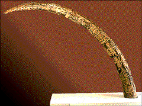
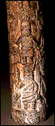
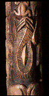

Curriculum Materials: World Mythology
|
Image
4
In the 16th century the oba of Benin died without any heirs, and the once-powerful kingdom of Benin was plunged into a century of chaos. A series of kings claimed the right to rule but failed to hold the kingdom together. Rebel chiefs fought to gain control of the weak kingship. Then a wise oba restored order to the kingdom, but not without making enemies. Iyase n'Ode, a particularly ambitious town chief and one of the oba's two military commanders, rebelled against the oba. The evil chief continued to make trouble in the kingdom by siding with the jealous rival brother of the next ruler, Oba Akenzua (ah-ken-ZOO-ah) I. Iyase n'Ode was extremely powerful because he had the
ability to turn himself into an elephant. It took the
strength and wisdom of another military commander, the Ezomo
Ehenua, to finally defeat Iyase n'Ode and save the kingdom.
In honor of this victory, Oba Akenzua I made the title of
ezomo, or palace chief, hereditary. Today, Benin ezomos
proudly trace their heritage to the historical hero Ezomo
Ehenua.
Benin Benin was ruled by kings, called obas, who were absolute monarchs, considered to be of divine ancestry. Several groups of chiefs aided the oba in administration of the kingdom. The highest-ranking palace chief, the ezomo, and the highest-ranking town chief, the iyase, acted as the oba's two supreme military commanders. Their military might and administrative influence gave them tremendous wealth and power. The palace and town chiefs often struggled for the oba's favor. In Benin oral history, the iyase is frequently cast as the oba's opponent. Ivory One of the most popular forms of Benin art is the carved ivory tusk. These tusks, which are displayed in sculpted bronze heads representing Benin's rulers, symbolically record the stories of Benin's illustrious history. Most tusks are carved for altars dedicated to the oba. A few, like this one, are made for the altars of particularly powerful ezomos in their own courts. Memorial Tusk Many of the images on this tusk celebrate the Ezomo Ehenua's defeat of the Iyase n'Ode and the restoration of the monarchy. Rather than illustrate every detail of an event or story, the artist symbolically evokes the story and its significance. Over generations Benin artists arrived at ABSTRACT images that all viewers could readily recognize and interpret.  An ezomo stands at the base of the tusk. (See detail.) In
his right hand he holds a sword to indicate his military
prowess. The diagonal band of rectangles across his chest
and the rings of small rectangles around his neck represent
the coral-beaded REGALIA
worn at the oba's court. A typical figure type in Benin art,
he is short with small legs and an oversized head. On each
side of the ezomo is a barely visible (because of abrasion)
abstract image of an elephant's trunk that turns into a hand
holding leaves. These symbolize extraordinary physical
strength and knowledge.  Abstract representations of elephants appear throughout
this tusk. (See detail.) In this large frontal image three
bent lines indicate the elephant's forehead, from which
spring its floppy ears. A few curved lines make its eyes,
and many straight lines emanate from a long curving central
line to create its powerful trunk. Elephant images such as
this one are still identified today as the Iyase n'Ode, the
oba's magical and dangerous opponent. By recalling Ezomo
Ehuena's victory over the terrible elephant-chief, the tusk
asserts and reinforces the power of the present ezomo as
well. It also reminds viewers that the right to inherit the
position of ezomo was granted by the grateful
oba.
Look Do you think the Edo artist who carved this tusk was interested in showing us what the Ezomo Ehenua and Oba Akenzua looked like or showing us their characteristics of power, strength, and status? Explain your answer. (The ezomo and oba are carved with ATTRIBUTES that express power, strength, and status through association with powerful animals and weapons and decorative dress and jewelry. They do not have specific facial features.) 2. An ATTRIBUTE is a distinctive symbolic feature that identifies a character. Find the attributes of the ezomo: elephant symbols, REGALIA, and sword. Use the detail. Find the attributes of the oba: elephants' trunks, regalia, and the leopard. 3. The people and animals on this memorial tusk are made up of carved lines. Can you see a straight line? A curved line? Find a jagged line. 4. The artist who carved this tusk used PATTERNS made up of repeated lines to create POSITIVE SHAPES occupy space. The area around positive shapes is called background, or NEGATIVE SHAPES. Where do you see negative shapes on the tusk? Do positive or negative shapes take up most of the area on the tusk?
Think 1. From what animal does this tusk come? Recall the story of Ezomo Ehenua. What part do elephants play in the Edo myth? Why are elephants so important to the Edo people? 2. In Edo culture, certain animals are associated with royalty. Elephants are associated with rulers and royalty because of their physical strength. The leopard is an animal associated with the Benin oba. What characteristics does a leopard have that an oba might want? (Cunning, speed, agility, intelligence, grace.) 3. Each carving of a person or animal on this tusk helps to remind viewers of the story about Ezomo Ehenua. What would a picture of three pigs remind you of? A girl in a red cape? What pictures might you use to recall the literature book you/we are reading? 4. Edo people understand even the most ABSTRACT images on this tusk. Why would an Edo artist want to make carvings that are easy for Edo people to identify and understand? (Edo people are reminded of the morals of the story of Ezomo Ehenua when they identify his image on the tusk; they are reminded of their cultural history and the heritage of their rulers.) 5. RELIEF is a term applied to sculpture when the figures project out from a BACKGROUND. The memorial tusk is an example of low relief, in which the figures project only slightly and no part is cut completely away from the background. Although coins are not "carved," they are excellent examples of low relief. Why might an Edo artist choose low relief for carving a tusk like this one? Consider: available tools, hardness of the medium, maintaining the original form of the tusk. Why might an Edo artist want to maintain the original form and shape of the tusk? Recall the importance of elephants in the Edo myth. 6. What is a memorial? (Something that keeps remembrance alive.) Why do you think this is called a memorial tusk? (It recalls how good service to the oba is rewarded and reminds the Edo people of their traditional mythology.) What other examples of memorials can you think of? (Gravestones or monuments in cemeteries, the Lincoln Memorial, the Vietnam War Memorial.)
|
{kind=link}